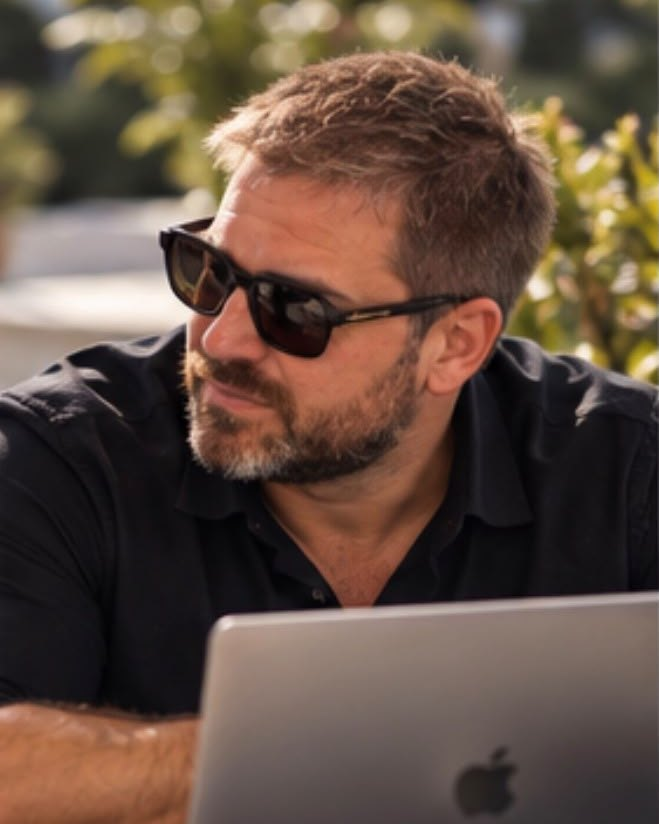

Quando la complessitàrichiede piùdi una consulenza.
Ristrutturazioni aziendali, operazioni societarie complesse e investimenti con capitale proprio.
Ogni impresa è una struttura. Quando l'equilibrio viene meno, serve chi sappia valutarla, riorganizzarla e, quando è la scelta corretta, gestirne la dismissione in modo strutturato.

Un professionista indipendente, dentro l'operazione.
Mi occupo di situazioni societarie complesse: imprese da riorganizzare, crisi da gestire, operazioni straordinarie, investimenti da valutare con capitale proprio.
Non mi limito al parere tecnico. Quando l'incarico è formalmente conferito assumo direttamente ruoli gestionali e societari; quando l'operazione lo richiede, individuo e coordino manager e professionisti specializzati.
- Coinvolgimento operativoDentro l'impresa, accanto alla proprietà, nelle fasi in cui si decide.
- Capacità decisionaleAnalisi indipendenti che portano a una scelta, non a un elenco di ipotesi.
- Approccio personalizzatoOgni operazione segue un percorso proprio, senza schemi predefiniti.
Seguo un numero limitato di incarichi, selezionati, con la riservatezza che queste situazioni richiedono.
Esperienza concreta, in situazioni diverse.
Situazioni diverse per dimensione, complessità e obiettivo. In alcuni casi si trattava di risanare e proseguire l'attività; in altri, di cedere o di condurre una cessazione ordinata. Ogni percorso è stato definito sull'analisi dei fatti.
Tipologie di intervento
Senza nomi né informazioni riservate. Gli esempi descrivono il tipo di situazione affrontata, non promettono risultati.
- 01
Riorganizzazione e continuità
Imprese da riportare in equilibrio per proseguire l'attività.
Esempio anonimo · da indicare - 02
Crisi e fase preconcorsuale
Gestione della crisi e supporto operativo nelle fasi più delicate.
Esempio anonimo · da indicare - 03
Dismissione o cessazione
Processi strutturati di cessione o di chiusura dell'attività.
Esempio anonimo · da indicare - 04
Operazioni straordinarie
Riassetti societari e operazioni fuori dall'ordinaria gestione.
Esempio anonimo · da indicare - 05
Incarichi diretti
Ruoli societari o gestionali assunti in prima persona, su incarico formale.
Esempio anonimo · da indicare - 06
Acquisizioni con capitale proprio
Partecipazioni, aziende, rami d'azienda o singoli asset.
Esempio anonimo · da indicare
Rimettere in asse la struttura.
- Ristrutturazione e riorganizzazione aziendale
- Valutazione delle possibilità di risanamento e di continuità
- Pianificazione e coordinamento degli interventi operativi
- Riorganizzazione delle strutture societarie e manageriali
Gestione della crisi e dismissione strutturata.
- Gestione strategica delle situazioni di crisi aziendale
- Supporto operativo nelle fasi preconcorsuali
- Gestione di processi strutturati di dismissione o di cessazione aziendale
- Coordinamento di professionisti legali, contabili e societari
Un ruolo diretto nell'operazione.
- Operazioni societarie straordinarie
- Assunzione diretta di incarichi societari o gestionali, quando formalmente conferiti
- Individuazione e coordinamento di manager e professionisti specializzati
- Supervisione strategica di interventi multidisciplinari
Investimenti con capitale proprio.
Oltre alla consulenza e alla gestione operativa, valuto investimenti diretti con capitali propri.
- Acquisizione di partecipazioni societarie
- Acquisto di aziende o rami d'azienda
- Acquisizione di asset
- Valutazione di interventi di finanziamento, nel rispetto della normativa applicabile
Un'attività selettiva e non automatica: ogni operazione è subordinata a un'analisi specifica. Non opero come fondo d'investimento né come intermediario finanziario.
Come intervengo.
- 01
Colloquio riservato
Un primo confronto per capire la situazione reale: numeri, persone, tempi, vincoli.
- 02
Valutazione
Un'analisi indipendente delle strade possibili, senza schemi predefiniti.
- 03
Decisione
Proseguire, riorganizzare, cedere o cessare: si decide sui fatti, insieme alla proprietà.
- 04
Intervento
Coordinamento dei professionisti coinvolti e, se conferito, un ruolo diretto nell'operazione.
Digital Assets & Blockchain
Competenze tecniche e formative su blockchain, hardware wallet, autocustodia e infrastrutture digitali. Un'attività distinta e separata dalla consulenza societaria.
- 01Hardware walletscelta e configurazione tecnica
- 02Reti blockchainarchitettura e funzionamento
- 03Autocustodiacustodia diretta dei propri asset digitali
- 04Sicurezza operativaprocedure nella gestione degli strumenti
- 05Formazioneinfrastrutture digitali e blockchain
Attività esclusivamente tecnica e formativa. Non comprende trading, gestione di portafogli, custodia per conto terzi né consulenza finanziaria regolamentata.
Italia e Spagna.
Italia
Attività prevalente, su tutto il territorio nazionale.
España
Málaga e Marbella.
Richiedi un colloquio riservato.
Seguo un numero limitato di incarichi e ogni richiesta viene letta personalmente. Bastano poche righe, senza dati riservati in questa fase: se c'è spazio per un intervento, verrai ricontattato per un primo colloquio.